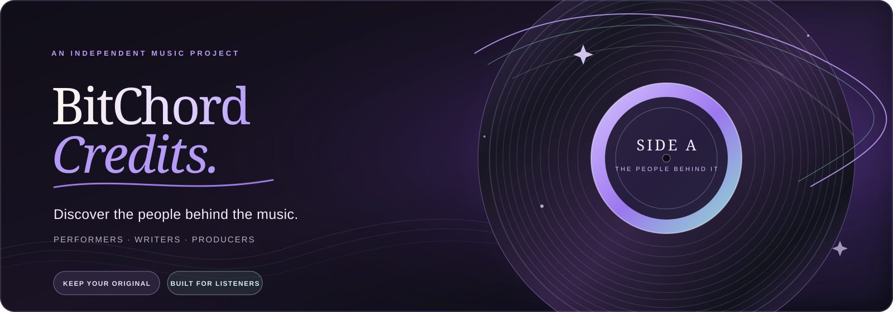

Meet the people behind
the music.
A familiar music-player foundation, with a native way to look beyond the track title and meet the people who made the recording.
01 / THE INSTALLER
Make room for
the credits.
No guesswork, no risky installs. Choose whether to keep your current BitChord, then pick the build that fits your device.
How should it install?
Keep your music setup intact.
Your original app, settings and private data are left untouched.
Which device is yours?
Universal includes all supported architectures. It is larger, but you do not need to identify your phone’s processor.
We’ll enable a download only when the exact release asset is present.
02 / THE LINER NOTES
The track is only
half the story.
Open a song’s Info and explore the people credited on the recording: performers, musicians, songwriters, composers, producers, arrangers, engineers and more.
Credits coverage depends on the external music catalogues. Some recordings may have limited or no contributor information.
03 / THE FOUNDATION
Same listening room.
More to discover.
Credits is built on the BitChord player foundation. The music experience stays familiar while the liner notes get a little richer.
YouTube Music search, browsing and playback.
Playlists, local music, offline listening and queue tools.
Lyrics, artwork, dynamic theming and song information.
Last.fm and ListenBrainz scrobbling, plus optional metadata integrations.
04 / BEFORE YOU PRESS PLAY
Good to know.
A few things worth knowing before installing or connecting an integration.
Will this replace my existing BitChord?
No. Keep Original installs separately and leaves official BitChord in place. Replace is offered only when the release's compatibility check confirms a safe in-place update.
Why might Replace be unavailable?
Android checks the package, signing certificate and version. The currently published v1.10.8 release has a MISMATCH report: do not install its legacy Replace APKs over your original app. Use Keep Original until the next validated release refreshes the assets.
Do I need to know what ARM means?
No. Choose Universal. It includes the supported Android architectures together, so you do not need to identify your phone’s processor.
Do I need a Credits.fm API key?
No. The integration supports an optional key. Some supporting metadata may be available through public sources, but results and coverage vary.
Is BitChord Credits the official BitChord app?
No. This is an independent community fork based on upstream BitChord; it is not affiliated with or endorsed by the upstream maintainers.
ONE LAST THING